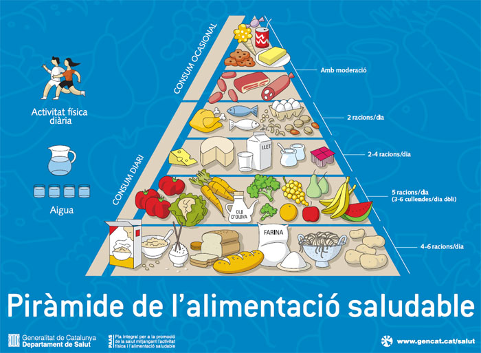

PIRÀMIDE DE L’ALIMENTACIÓ SALUDABLE
La forma triangular de la piràmide nutricional ens orienta sobre la freqüència i les quantitats que hem de consumir de diferents aliments. En les primeres baules, se situen els aliments que més pes han de tenir en l'alimentació diària. A mesura que anem pujant de nivells, apareixen altres aliments que cal consumir en menor quantitat.
En el vèrtex se situen aliments de consum opcional i que en cas de consumir-se, ha de ser ocasionalment.


ALIMENTS A DIFERENTS NIVELLS
La piràmide nutricional, també coneguda com piràmide alimentària o piràmide alimentària, és usualment el mètode utilitzat per a suggerir la varietat d'aliments a consumir en forma quotidiana.
El que proposa la piràmide és la distribució per consum del tipus o grup d'aliments que la componen en propociones semblants a la de les capes o esglaons.
- Els graons inferiors proposen majoritàriament hidrats de carboni complexos.
- Els graons centrals suggereixen aliments que contenen menor quantitat d'hidrats de carboni, més proteïnes i greixos i gran contingut vitamínic.
- Els graons superiors, de baix a dalt, contenen quantitat de proteïnes i quantitat de grases.
- L'esglaó més alt conté majorment greixos i hidrats de carboni simples, tots aliments que aporten principalment calories; i que per això es recomanen en menor quantitat.
En menor quantitat: Sucres simples i greixos
- Grases i Dolços, mantega, mantega, natilles, mermelades, gelees, xocolates, mel, tortes, amasats, gelats, postres, etc.
Aliments amb proteïnes:
- Carns vacunes, de porc, cabra, pollastre, embotits, carns fredes, peix, marisc, calamars, formatges durs, semidurs, tous, d'untar i altres lactis i ous.
Aliments rics en vitàmines i minerals:
- Verdures, hortalisses, tubercles, fruites i fruits secs.
Carbohidrats complexos:
- Cereals, llegums, grans, farines i derivats: Arròs, pans, galetes, pastes, sèmoles, etc.
Regles bàsiques de nutrició
- Beure 1,5L - 2L d’aigua al dia.
- 60 minuts d’activitat física al dia.
- Consumir gran varietat d’aliments.
- Equilibrar els aliments que consumim amb l’activitat física, per mantenir i/o millorar el pes corporal.
- Ingerir majoritàriament cereals integrals, fruites i verdures.
- Mantenir una dieta baixa en grases saturades i col·lesterol.
- Seguir una dieta moderada en sucres.
- Seguir una dieta baixa o moderada en sal (sodi).
La quantitat o número de porcions de cada aliment que una persona ha de consumir depen de diversos factors personals:
- El pes
- L’edat
- El sexe
- L’activitat física
Porcions recomanades
- Pa, cereals, pasta i arròs: 6/11 porcions al dia.
1 porció equival a: 1 llesca de pa, ½ tassa de pasta o cereal cuits, 28 gr de cereal llest per menjar, ½ panet, 3-4 galetes tipus crackers petites.
- Verdures: 3/5 porcions al dia.
1 porció equival a: ¾ tassa de brou de suc de verdures, ½ tassa de verdures cuites, 1 tassa de verdures crues, ½ tasses de llegums i pèsols cuits.
- Fruites: 2/4 porcions al dia.
1 porció equival a: 1 unitat de grandària mitjana, 1 tall de meló, ½ tassa de maduixes, 3/4 tassa de suc, ½ tassa de fruita enllaunada o en daus.
- Llet, iogurt o formatges: 2/3 porcions al dia.
1 porció equival a: 1 tassa de llet o iogurt, 60 gr de formatge tou o 50 gr de formatge.
- Carn, aus, peix, ous, mongetes seques i nous: 2/3 porcions al dia.
1 porció equival a: 70 gr de carn a la planxa, aus o peix (un total diari de 150-200 gr), 1 ou, ½ tassa de llegums cuites, 30 gr de fruits secs.
- Greixos, olis i dolços consumir ocasionalment.
Són aliments alts en greixos: margarina, mantega, maionesa, nates, formatges cremosos, salses.
En aquest punt podem aclarir que la piràmide no distingeix entre els diferents tipus de greixos, però si recomana un baix nivell de consum total.
D'altra banda aconsella augmentar el consum d'oli d'oliva, donada la seva relació amb un baix risc de patir malalties cròniques.
Són aliments alts en sucre: caramels, llaminadures, fruites en almívar, refrescos i sucs comercials, pastissos, sucre, mel, xarops i melmelades.
CONSELLS RELACIONATS AMB ELS ESTILS DE VIDA
Els consells relacionats amb els estils de vida saludable que tenen un impacte superior al 40% en la form d’emmalaltir o de morir en els païssos més desenvolupats, són els següents:
- Activitat física: L'exercici diari ja era una recomanació, però ara es concreta en dedicar-li una hora al dia. 10.000 passos diaris pot ser un marc de referència.
- Equilibri emocional: El nostre estat d'ànim condiciona les nostres necessitats alimentàries. La tristesa pot treure'ns la gana i l'ansietat pot fer que mengem compulsivament. Però també l'estat emocional es reflecteix a l'hora de comprar, de triar, de cuinar i de consumir. Per això és important el concepte de "alimentació conscient" o intentar deixar de banda l'estat d'ànim quan parlem d'alimentar-nos.
- Balanç energètic: Important l'equilibri entre la ingesta energètica (el que mengem) i la despesa energètica (el que gastem a través del metabolisme basal, la termogènesi i l'activitat física). En aquest equilibri influeixen factors com la mida de la ració, la freqüència de consum (és aconsellable fraccionar la ingesta total en 5 preses diàries) o la cronobiologia: la importància del moment per ingerir. Per exemple, hi ha evidència que la ingesta té una major rendiment metabòlic a primera hora del dia, d'aquí la importància de l'esmorzar.
- Tècniques culinàries saludables: Com cuinem repercutirà en la nostra salut. La tècnica de cuina sana més efectiva és la cocció al vapor, però també els bullits, la planxa o el forn sempre millor que el fregit. És important que els recipients no transfereixin cap element als aliments. I per evitar-ho el millor és el vidre. Pel que fa a les eines per manipular aliments (escumadores, culleres ...) les més adequades són les de silicona, que eviten aixecar el tefló de les paelles. Les culleres de fusta també són aconsellables, però han de rentar-se al rentaplats a mínim un cop a la setmana per eliminar possibles fongs.
- Beure aigua: Entre 4 i 6 gots al dia d'aigua, com a mínim, i completar amb altres líquids fins a aconseguir, com a mitjana al dia, els 2 litres aproximadament.